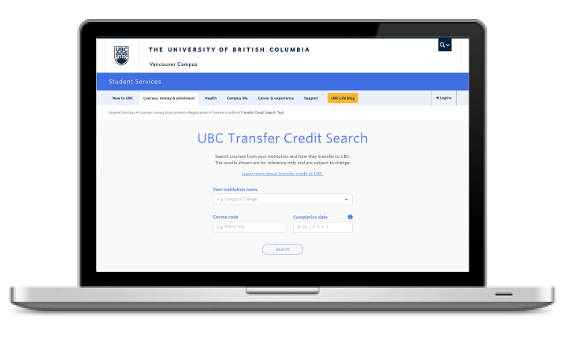
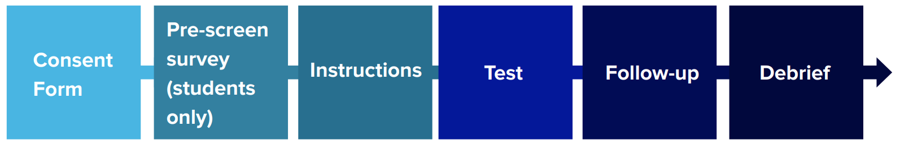
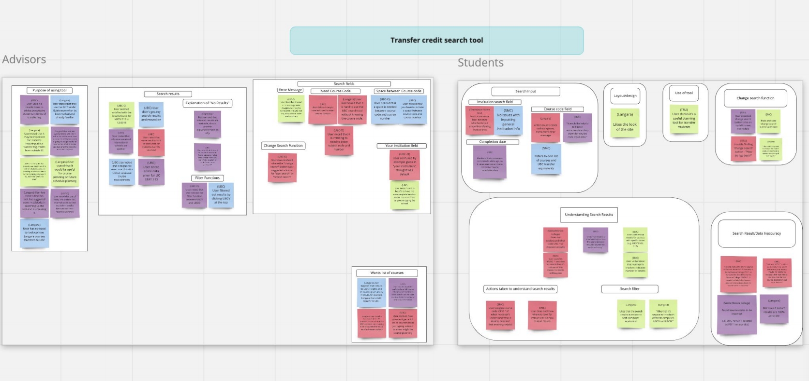
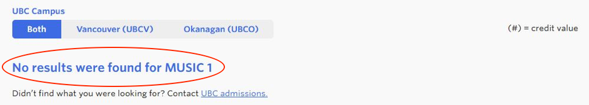
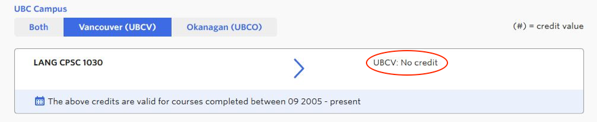
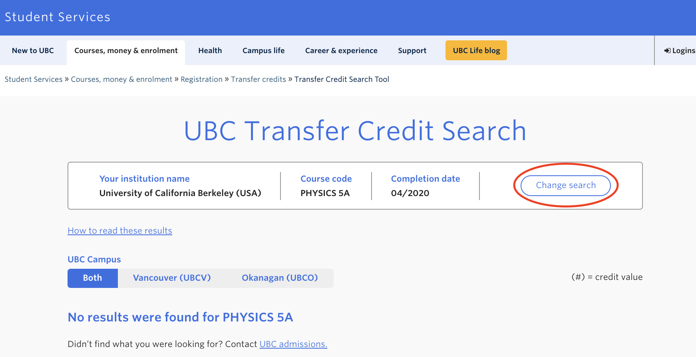

Background
UBC UX Lab is a hands-on program under UBC Student Communication Services where
students learn about user experience and conduct experiments to improve the services
that UBC provides its students.
I was part of the summer 2019 cohort and our first project was to conduct a usability
study on the newly launched Transfer Credit Search Tool to understand how stakeholders
are navigating the tool.
The Transfer Credit Search Tool was launched on June 2, 2019 by UBC Student Communication
Services to assist advisors and students. Prior to the launch, three phases of usability
testing were already performed on the design by UBC staff.
Research Question
How are students and stakeholders navigating the newly launched UBC Transfer Credit Search Tool?

Research Methodology
We decide to evaluate the tool by running remote moderated scenario tests on stakeholders
with the talk-aloud method. During the scenario test, we asked the participants to look
up 2 courses in the tool and explain what the credits transfer to at UBC. The following
is a rough overview of our test flow:

The usability study consisted of:
1. Pre-screen Questionnaire: this allowed us to better understand the background of each user,
such as what school they were transferring from, and what they were studying.
2. Scenario Task: this allowed us to find the pain points in the user flow and take notice
of certain functions that were not as intuitive.
3. Follow-up Questions: this allowed us to understand why the user may have experienced certain
issues and investigate the root cause of the pain points that arose during the scenario task.
Data Analysis
As multiple pre-launch testings had already been conducted, we tested a smaller sample of
7 participants (4 advisors, 3 students). To analyze the data, we created an affinity diagram
to categorize similar trends.

Key Findings
1. Error message confusing: Users were unsure whether the error ‘No Results Found’
meant the course would not transfer at all or was still awaiting evaluation. Users
were confused by the vagueness of the error message and felt further clarification
was needed.

2. Course code inconsistencies in UBC database: The tool showed the course would
not transfer when the user indicated it was supposed to, or the course code was not
the same between UBC and other school databases. This finding allowed us to conclude
that there were certain inaccuracies within the UBC database, creating mistrust in
the users.

'Change Search' button: This button was meant to be an easy way for users to return
to the search page without having to re-input general information such as institution
name - users found the button difficult to find or expected it to be somewhere else.

For a more detailed look at our results, please take a look at our
presentation.
Reflection
Some limitations we have in this study was the lack of participants. Although the tool
had already undergone three phases of pre-launch usability testing, we would have
benefited from a larger sample size. Of the student participants that were tested,
all three of them were transferring into the Faculty of Science, we may have gained
more representative data and insight and if we ran tests on students transferring into
other faculties.
Some improvements that can be made for a better user experience would be to make the
‘Change Search’ button more obvious or put it in a more identifiable location,
specifying the error message, improving data reliability, and increasing exposure
by improving the SEO of this product.